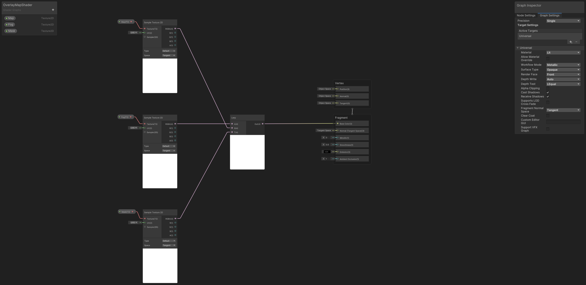
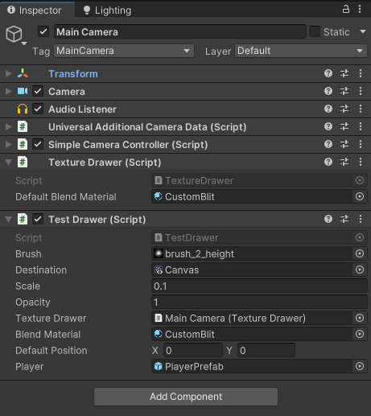
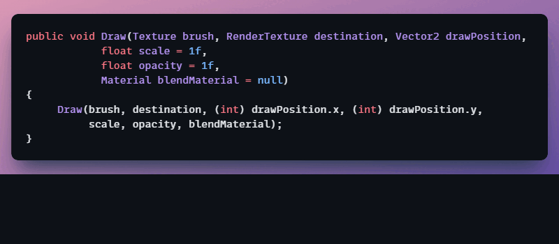
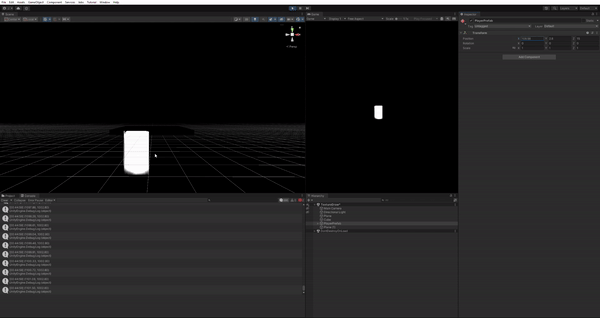
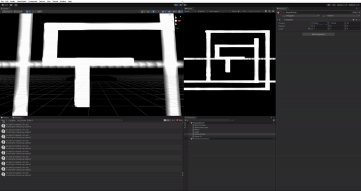
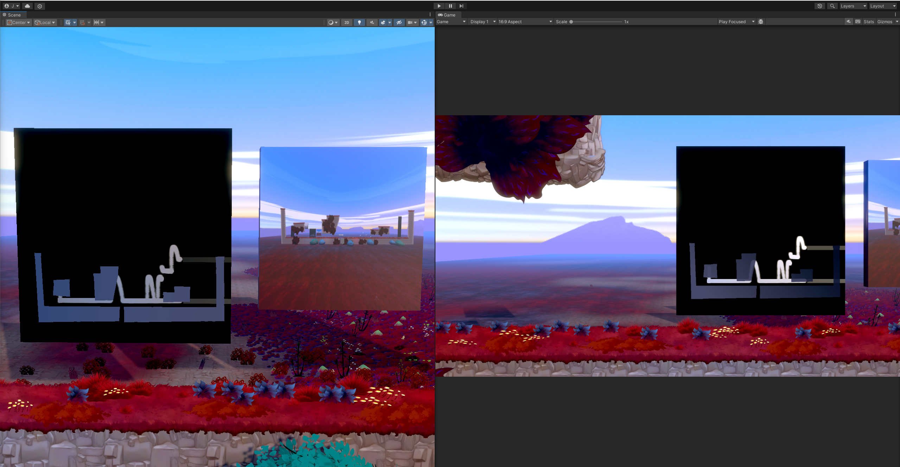

Project Status: Uncompleted
Project Type: Hybrid Learning Environment
Project Duration: 3 ~ 4 weeks
Software Used: Unity
Languages Used: C#, CG
Primary Role(s): Game Developer
Team: 3 devs
Our Unannounced Game as a Service is a 2D Metroidvania experience for local co-op play, inspired by beloved 1980s cartoons. It operates as a constantly evolving game, offering an expanding open world, engaging storylines, and character customization. Join up to 4 players as you embark on cooperative adventures and exciting missions, uncovering the mysteries of the game's world while customizing your characters with 1980s nostalgia.
This feature was originally planned as an overlay minimap with a Fog of War system,
using a custom shader to manage three texture inputs: the base map, a fog texture,
and a mask texture to reveal explored areas.
While we didn't manage to complete the system during our time on the project,
this ended up being a valuable learning opportunity where i explored render textures,
blend materials, and custom draw logic using the GPU.
The work laid the technical foundation for a later team to implement the full system.
Fog of War ShaderGraph:

The shader uses a basic Lerp to blend three layers:
base map, fog, and player mask — revealing explored areas in real time.
During early brainstorming, we explored several ways to create the minimap.
I suggested using a secondary camera to render the entire level, and began experimenting with a technique I had just discovered: Blitting — a way to quickly copy pixel data from one texture to another, like taking a low-cost screenshot.
At first, I didn't fully understand how blitting or render targets worked. I even tried calling Camera.Blit directly, expecting it to just work — it didn’t.
That was my first big technical hurdle, and it taught me the importance of understanding Unity’s rendering pipeline more deeply.
Two classes attached to the camera:

After some failed attempts and more brainstorming, we reached out to our technical director for guidance. I explained I was struggling to blit the full level through the camera.
Function derived from the original Texture Drawer class:

He suggested skipping blitting altogether and instead drawing directly onto a texture — that's when I first discovered the use of RenderTextures and blend materials.
From that point, I created a new class built on the original TextureDrawer logic.
This class utilized a brush texture and blend shader to paint directly onto a RenderTexture canvas.
By using a custom blit shader and a simple one-line call to draw the brush onto the destination texture, I was able to reproduce the behavior I originally intended with camera blitting— only with more control and better performance.
Manual drawing in action:

Since the goal was to clear fog dynamically as the player moved, I linked the draw position directly to the player’s world position.
The Custom Blit shader converts vertex positions from object space to clip space, ensuring the brush only draws within the bounds of its target texture. This gave the system the spatial accuracy I was aiming for.
Drawn texture result:

Thanks to this setup, the texture state persists between play sessions. Even after restarting the game, the drawn path remains and continues updating in real time.
While we didn’t complete the full Fog of War system before handing off the project, I managed to develop a functional and scalable prototype. It featured a dynamic drawing system that could track and visualize player movement using shaders and GPU-accelerated rendering.
I also implemented a world-to-texture coordinate conversion system to make sure player positions were mapped correctly to the RenderTexture canvas, regardless of level size. Though it wasn’t 100% accurate due to resolution scaling limitations, the result was visually solid and functional for gameplay prototyping.
Player path drawing in action:

The brush draws the player’s trail dynamically in real-time using GPU memory. Source code: GitHub
Eventually, this system was passed on to the next team of developers—whether they rebuilt it or improved on it remains unknown. Still, this task gave me a valuable, hands-on introduction to Unity’s rendering pipeline, shader integration, and system architecture. It also strengthened my confidence in combining rendering logic with gameplay systems in a performant and maintainable way.